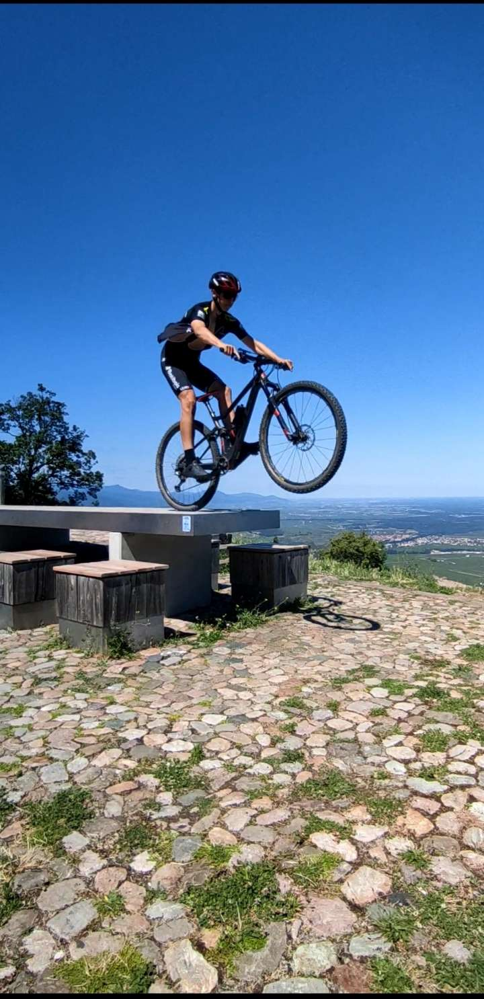
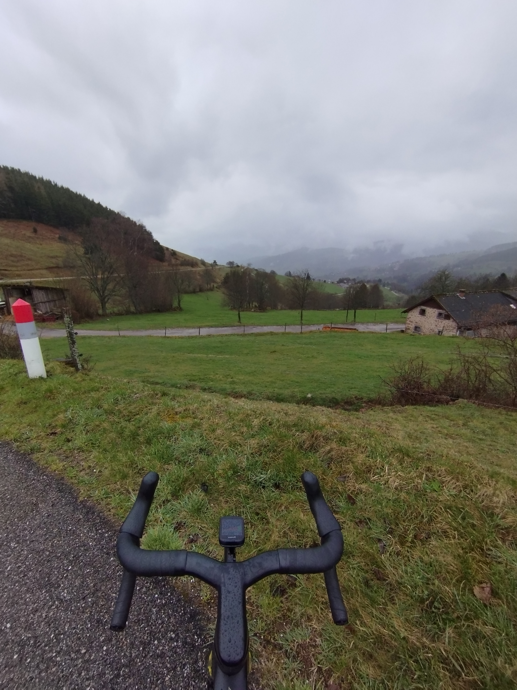
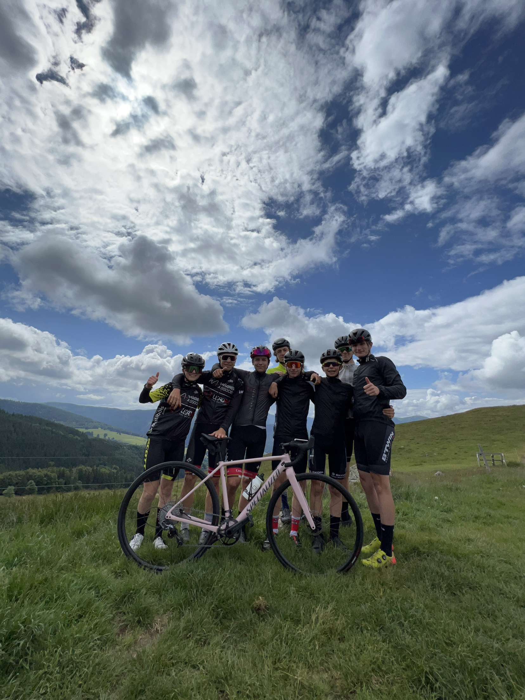
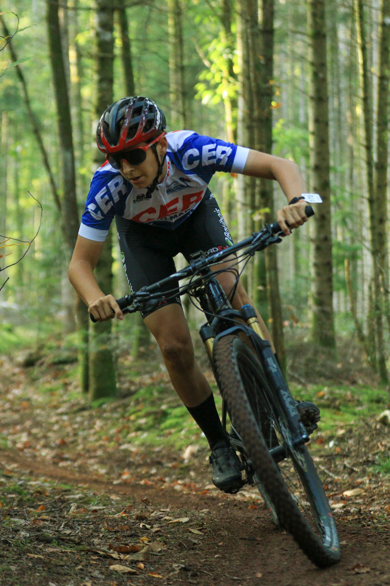

Le cyclisme, en tant que discipline sportive, englobe diverses formes d'activités à vélo. Parmi ses variantes, on trouve le VTT, qui se distingue par une pratique axée sur la montagne et des terrains accidentés, offrant ainsi une expérience immersive en pleine nature, que ce soit en montagne ou en forêt. Une autre modalité est le vélo de route, orienté quant à lui sur des distances plus longues. Ajoutons à cela le BMX, qui se décline en différentes formes, telles que le BMX freestyle, centré sur la réalisation de figures, et le BMX race, une discipline de course effectuée sur un circuit.
Ma passion pour le cyclisme a débuté à l'âge de 8 ans, lorsque j'ai rejoint un club de triathlon, une discipline qui englobe la natation, la course à pied et le vélo de route. Dès mes débuts dans le triathlon, le vélo s'est immédiatement distingué comme mon sport de prédilection. Après avoir mis fin à ma pratique du triathlon, j'ai décidé de me consacrer entièrement au cyclisme. Le VTT a particulièrement retenu mon attention et constitue aujourd'hui ma discipline principale. En plus du VTT, je pratique également le cyclisme sur route, créant ainsi une complémentarité puisque la route contribue à mon progrès dans la pratique du VTT. Cette diversité m'offre une expérience variée et enrichissante dans le monde du cyclisme.
Le Centre Elite Régional, une section spécialisée dans le cyclisme au sein de mon ancien lycée qui offre un emploi du temps adapté pour permettre un suivi d'entraînement optimal. Grâce à cette initiative, j'ai pu bénéficier de trois jours d'entraînement en semaine, en plus des deux jours habituels du week-end. Mes trois années de lycée ont été particulièrement enrichissantes grâce à mon intégration dans cette section. Cela m'a non seulement permis de progresser dans ma pratique du cyclisme, mais aussi de partager des moments intenses avec d'autres passionnés de ce sport. Ces années restent gravées dans ma mémoire comme une période où le dépassement de soi et la camaraderie ont été les maîtres-mots.
Au cours de ces 8 années, j'ai acquis de nombreuses compétences, en particulier lors de mes années au Centre Elite Régional. J'ai appris à organiser une préparation de course efficace, que ce soit pendant les entraînements, lors de la reconnaissance des parcours, ou encore dans la préparation mentale. L'opportunité d'intégrer une équipe de VTT m'a conduit à participer aux coupes de France VTT ainsi qu'au championnat de France. Cette expérience a non seulement amélioré mon organisation lors des compétitions, mais m'a également permis d'atteindre une autonomie totale, tant dans la planification des entraînements que dans la gestion des jours de course. Fort de cet apprentissage, je suis désormais en pleine préparation pour atteindre mon objectif de 2024. Pour la nouvelle saison, j'ambitionne de participer à mes premières courses de VTT marathon. Après avoir principalement évolué dans des courses VTT XC de format court, je pense que cette discipline pourrait mieux correspondre à mes aptitudes.
Cycling, as a sports discipline, encompasses various forms of cycling activities. Among these variations, there is mountain biking (MTB), which stands out for its focus on mountainous and rugged terrains, providing an immersive experience in nature, whether in the mountains or forests. Another modality is road cycling, oriented towards longer distances. Additionally, there is BMX, which comes in different forms, such as BMX freestyle, centered around performing tricks, and BMX race, a racing discipline conducted on a circuit.
My passion for cycling began at the age of 8 when I joined a triathlon club, a discipline that includes swimming, running, and road cycling. From the outset of my triathlon journey, cycling immediately stood out as my preferred sport. After discontinuing my participation in triathlon, I decided to dedicate myself entirely to cycling. Mountain biking (MTB) particularly captured my interest and now serves as my primary discipline. In addition to MTB, I also engage in road cycling, creating a complementary relationship where road cycling contributes to my progress in MTB. This diversity provides me with a varied and enriching experience in the world of cycling.
The Regional Elite Center, a specialized cycling section within my former high school, provides a tailored schedule to facilitate optimal training follow-up. Thanks to this initiative, I was able to benefit from three days of training during the week, in addition to the usual two days over the weekend. My three years in high school were particularly enriching due to my integration into this section. This not only allowed me to progress in my cycling practice but also to share intense moments with other enthusiasts of the sport. These years remain etched in my memory as a period where self-improvement and camaraderie were the guiding principles.
Over the course of these 8 years, I have acquired numerous skills, especially during my time at the Regional Elite Center. I learned how to organize effective race preparation, whether during training, course reconnaissance, or in mental preparation. The opportunity to join a mountain biking team led me to participate in the French MTB Cups as well as the French Championship. This experience not only improved my organization during competitions but also allowed me to achieve complete autonomy in both training planning and race day management. With this learning, I am currently in full preparation to achieve my goal for 2024. For the upcoming season, I aspire to participate in my first mountain biking marathon races. After primarily competing in short-format XC mountain bike races, I believe that this discipline may better align with my abilities.